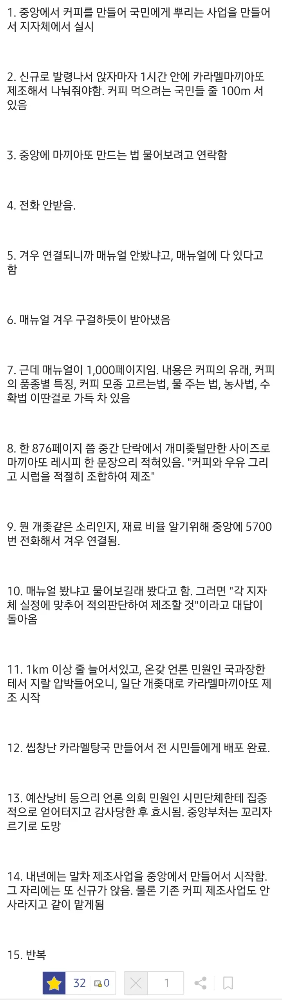

5년뒤 : 카라멜마끼야또, 말차, 수박주스, 콜드브루, 마카롱, 탕수육, 마라탕 제조업무가 그대로 있음. 내년에 신메뉴 또 늘어날 예정
그리고 이전담당자는 메뉴얼에있으니 보고하라고 인수인계하고 사라짐
3년뒤엔 좆방 카페사업으로 변질
우유납품업체는 개좆소 여성기업으로 계약해야하며 찐빠발생시 담당자를 효수한다
전기차 계약한 시점되서 전기차 보조금 처리하는 꼬라지보니까 진짜 공직사회 개답답하더라 ㅋㅋ
관계부처가 씨발 존나 많아서 뭐 물어볼라하면 '내려온 공지 없다, 어디어디에 전화해봐라~'하고 전화 존나 돌림
너도 거기 들어가면 그렇게 됨
효수 당하고 싶어?
솔지히 타 중앙부처에서 벌리는 일들 검토나 의견조회 들어와서 보면 굳이? 이게 돼? 하는 것들 많은데... 위에서 한다는데 어쩌겄나
걔들도 하고 싶어서 하는 게 아니라 ㅋㅋㅋ 옳그떠들이 여론타고 함
뭐 당장 나부터도 ㅋㅋㅋㅋ 꼬리 자르기 안하는 상사 안만나길 바라는 수밖에 없지
저기서 하나 더 넣으면 실제로 있던일인데 의회에서 김밥집 하던 여편네 의원 하나가 우리 지자체는 마끼야또 두잔씩 돌릴겁니다!두잔!아몰랑!두잔!이지랄해서 되는것도 없이 늦어지고 씨발 공무원들 노냐 하고 돌 맞음ㅋㅋ
이건 볼때마다 존나웃긴게 필력도 필력인데200%확률로 현직이 쓴거임 ㅅㅂㅋㅋㅋㅋ
+ 가끔 뜬금없는 지방에서 개쩌는 캐러멜마끼야또 만들어주고 있는게 뉴스에 나옴. 우리는 왜 저렇게 못하냐고 내리갈굼당함. 담당공무원 압박에 시달리다가 면직 or 육휴런
진짜 웃긴게
재량에 맞기는것도 기본적인 기준을 정해주고 재량에 맡겨야지 ㅋㅋㅋㅋㅋ
재량대로 하다 문제생기면 독박 ㅋㅋㅋㅋ
책임지지 않는 사회 ㅈ됨
원래 사기업도 저런식으로 돌아가는 회사들 많음.
그냥 현장직들이나 기술직들이 재량으로 차력쇼하는..
그러나 사기업은 최소한 한 직무에 계속 붙어있는 사람들이 있음. 그리고 현장업무 힘든거 알아서 급여라도 높게줌..
공무원은 그게 다 안되니까 문제
공무원 사회는 공산주의랑 비슷하다 생각 함
??? : 아 알아서 하라고 시펄 (니 책임인건 알지?)
저새끼 현직 아님
용역줌
아님 고급지게 민간위탁으로 돌려버림
그렇다고 한자리에 오래 붙어있음 해쳐먹으러 하는 사람들이 나타나서 문제라...
카라멜탕국이 레알 킥이네 ㅋㅋㅋ
정책 변화의 속도가 너무 빠름. 외국은 저정도가 아닐텐데
예상되는 문제점 검토 후 도입이 아니라 일단 사업 도입 후 다음 정권이 들어서면 기존 사업의 현황 및 문제점을 적고 개선방안을 또 맛깔나게 올려야 하거든
그리고 뭔가 도입되었으며 1개월 이내에 우수사례 발굴을 시작해서 1년도 지나기 전에 성과보고를 해야 함. 아직 사업 결과가 구조적으로 나올 수 없다면 기존 것에서 끌어다가 우수사례로 포장해서 포럼 열고 세미나 열고 하면 됨
그리고 저거 예산으로 커피 1잔당 만원씩 이렇게 예산잡히겠지?
중간에
유관기관들 애매하게 엮어서 커피 활동을 같이 시작함
이것도 추가해줘
팁) 인사이동 시즌엔 중앙도 ㅈ도 모르는 쌩신입들 앉아서 전화 받고 있으니 물어보지 말 것. 어차피 아무도 모름.
지자체 재량에 맡긴다는 만능방패가 없던 시절에는
어떻게 일했을까 경제발전 시기에 ‘지자체’ ‘풀뿌리 민주주의’ 저딴거 있었으면
한강의 기적은 무리였을듯 ㅎㅎ
공기업까지 내려오면 정부-본사-지사 순으로 개박살남 ㅋㅋㅋ
제발나땐안터져라 하면서 비는거말곤 없음ㅠ